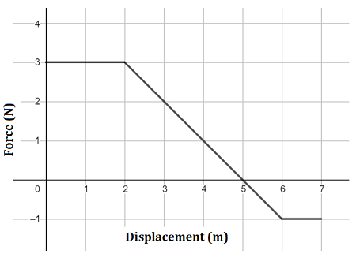

When a force changes with position, the simple formula \( W = Fd\cos\theta \) no longer applies. Instead, we must consider the work done over infinitesimal displacements and sum (integrate) the results.
The Calculus-Based Definition of Work
If the force varies with position, we define work using the dot product of force and an infinitesimal displacement:
$$ W = \int_{x_i}^{x_f} \vec{F}(x) \cdot d\vec{r} $$
For motion along a straight line in the \( x \)-direction:
$$ W = \int_{x_i}^{x_f} F(x) \, dx $$
Understanding This Equation
You're summing up the small amounts of work over each tiny step of motion.
This is conceptually similar to finding the area under a force vs. position graph.
Concept: For variable force, work is the area under the force-position graph.
Units and Sign
Units remain in joules (J), and:
Positive work → force is in the direction of motion.
Negative work → force opposes motion.
Graphical Interpretation
If you are given a graph of \( F(x) \) vs. \( x \), the total work is the net signed area under the curve between \( x_i \) and \( x_f \). Negative area means negative work being done.

Example 1 – Linearly Increasing Force
Problem: A force increases with position as \( F(x) = 4x \) (in N), from \( x = 0 \) to \( x = 3 \) meters. Find the work done.
Problem: A force graph shows \( F = 5 \, \text{N} \) from \( x = 0 \) to \( x = 2 \), and \( F = -3 \, \text{N} \) from \( x = 2 \) to \( x = 4 \). What is the net work done?
Solution:
Work from 0 to 2: \( W_1 = 5 \cdot 2 = 10 \, \text{J} \)
Work from 2 to 4: \( W_2 = (-3) \cdot 2 = -6 \, \text{J} \)
Total work: \( 10 - 6 = 4 \, \text{J} \)
Common Functions You Might See
Linear: \( F(x) = ax + b \)
Quadratic: \( F(x) = ax^2 \)
Inverse: \( F(x) = \frac{1}{x^2} \) → like gravity or electrostatics
Spring Force: \( F(x) = -kx \) → leads to potential energy! (covered later in this unit)
Conceptual Questions
What does a negative area under a force graph mean physically?
How would you compute work from a non-linear force function?
How can you estimate work from a graph if the function isn't known?
Check your answers:
Negative area under a force graph: This means the force is doing negative work (opposing the motion), so energy is being taken away from the object.
Work from a non-linear force function: Integrate the force function over the displacement: \( W = \int F(x)\,dx \).
Estimate work from a graph: Approximate the area under the curve using geometric shapes (rectangles, trapezoids) or count squares if it's on graph paper.
Summary
For non-constant forces, work is computed using integrals.
It's the signed area under a force-vs-position graph.
Examples include springs, variable thrust, or any changing field force.